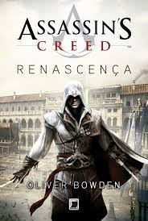
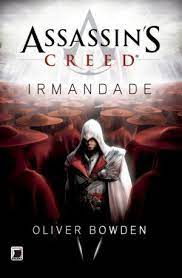
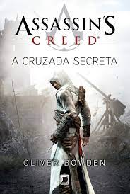
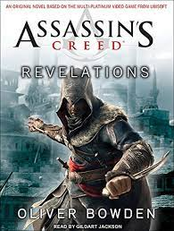
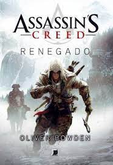
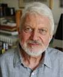

 Traído pelas famílias que governam Itália, um jovem embarca numa épica busca por vingança. Para acabar com a corrupção e restaurar a honra da sua família, ele terá que aprender a Arte do Assassino. Pelo caminho, Ezio terá que apelar à sabedoria de grandes mentes como Leonardo Da Vinci e Niccolo Machiavelli, sabendo que a sobrevivência está dependente da sua perícia. Para os seus aliados ele será uma força para trazer a mudança lutando pela liberdade e pela justiça. Para os seus inimigos ele será uma ameaça que procura destruir os tiranos que oprimem o povo de Itália. Assim começa uma história épica repleta de poder, vingança e conspiração.
 Roma, outrora poderosa, jaz em ruínas. A cidade está impregnada de sofrimento e degradação, os seus cidadãos vivem sob a sombra da impiedosa família dos Bórgia. Apenas um homem poderá libertar o povo da tirania Bórgia: Ezio Auditore, o Mestre Assassino. A demanda de Ezio irá testá-lo até aos seus limites. César Bórgia, um homem mais malévolo e perigoso que o seu pai, o Papa, não descansará enquanto não tiver conquistado Itália. Nestes tempos tão traiçoeiros, a conspiração está por todo o lado, até no meio da própria Irmandade...
 Muito antes de Ezio Auditore nascer e lutar pelo Credo dos Assassinos, a poderosa Irmandade já estava em plena ação. É Niccolò, pai do famoso Marco Polo, quem, em 1257, revela a história de Altaïr Ibn-La’Ahad, um dos mais importantes e extraordinários entre os Assassinos. Os acontecimentos que mudarão dramaticamente o Credo e a vida de Altaïr começam em Acre, 1191. É quando ele, a pedido de Al Mualim, parte para recuperar um artefato precioso na Terra Santa.
 A biblioteca n?o encerra apenas saberes secretos, mas tambem o segredo mais perturbante que o mundo ja viu, um segredo que os Templarios desejam usar para controlar os destinos da humanidade. S?o necessarias cinco chaves para aceder a biblioteca. Para as encontrar, Ezio tem de viajar para a conturbada cidade de Constantinopla, onde um exercito de Templarios cada vez maior ameaca o Imperio Otomano. Seguindo as pisadas de Altair, seuantepassado, Ezio tera de derrotar os Templarios uma ultima vez. Os riscos nunca foram t?o grandes e o que comecou como uma peregrinac?o tornou-se numa corrida contra o tempo...
 Assassin's Creed: Renegado é o mais novo livro da série escrito por Oliver Bowden, e retratará a história do protagonista do game Assassin's Creed III, Connor Kenway, por meio do diário de Haytham Kenway. A emocionante continuação da saga se passará nos Estados Unidos durante a guerra pela independência americana. Na ocasião, Connor jurou defender o direito de liberdade de seu povo e de sua nação contra a opressão inglesa. Para isso, ele precisará colocar em prática suas habilidades em meio ao caos do campo de batalha, mostrando quem realmente é e como se tornou um assassino mortal.
Nascimento: 22 de outubro de 1948 (idade 73 anos), Ilford, Reino Unido Pseudônimo(s): Oliver Bowden Formação: Clare College, Hargrave Military Academy Anton Gill é um escritor inglês de ficção histórica e não-ficção. Assina obras também com os pseudônimos: Ray Evans e Antony Cutler, a série de livros Assassin's Creed ele assina com o pseudônimo: Oliver Bowden